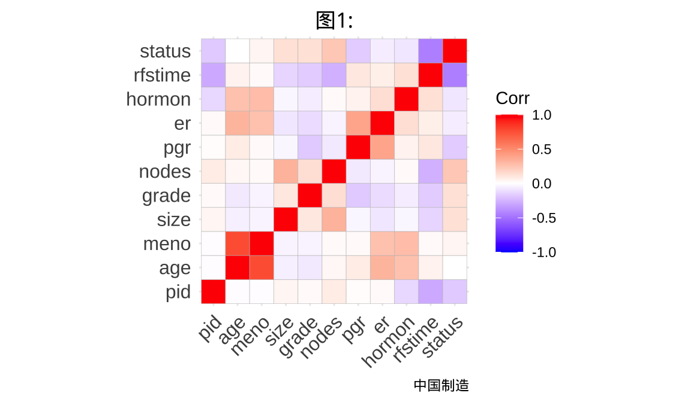
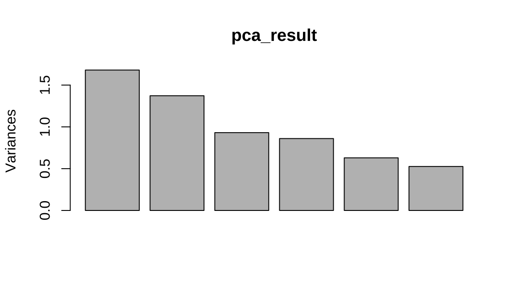
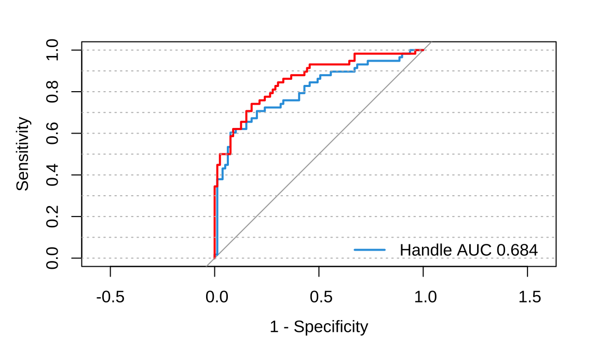
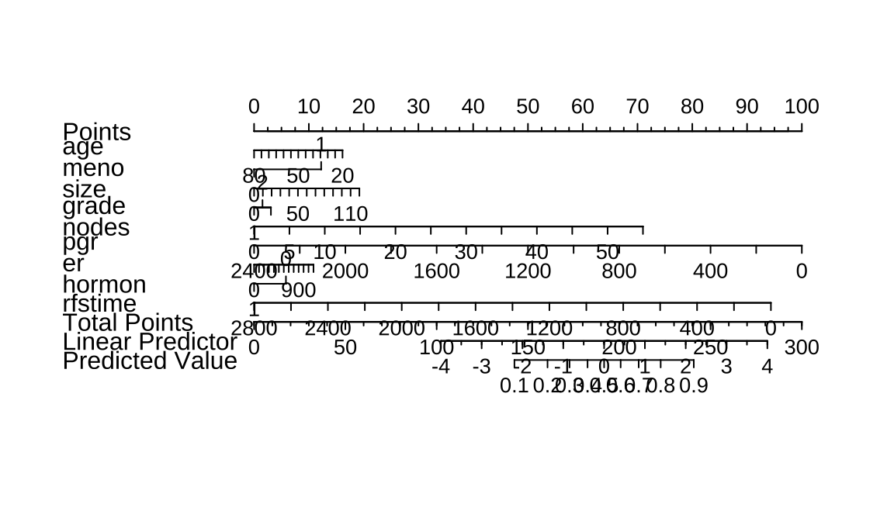
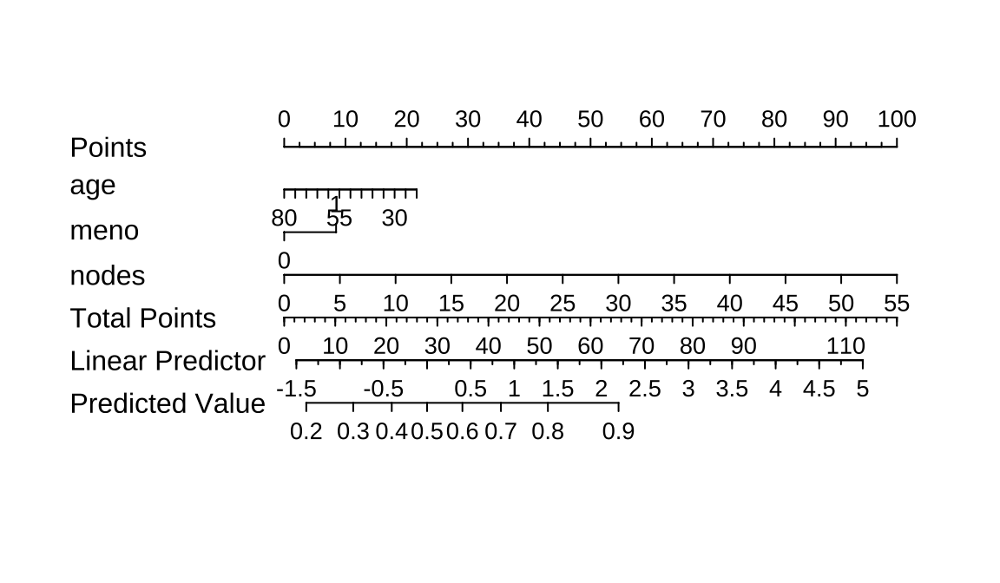
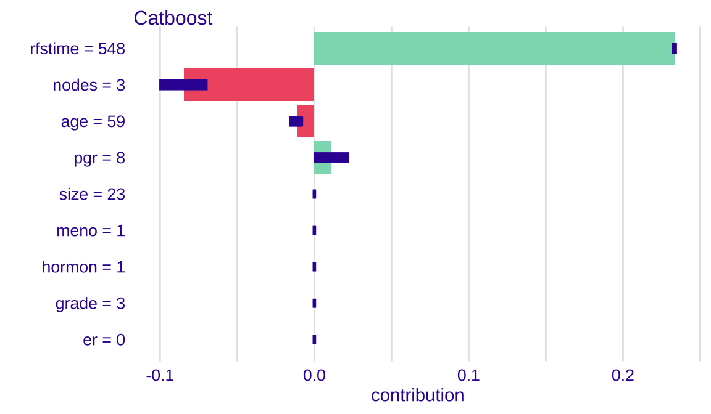
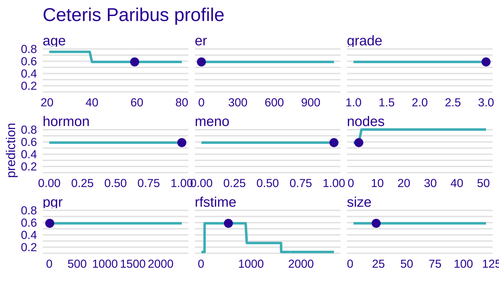
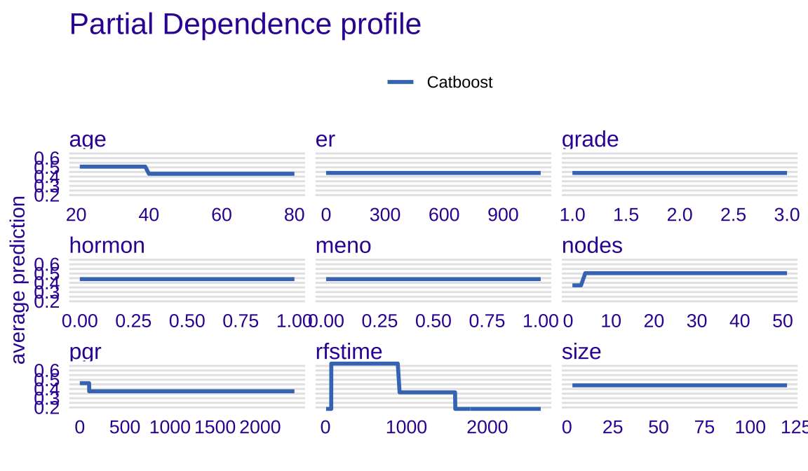
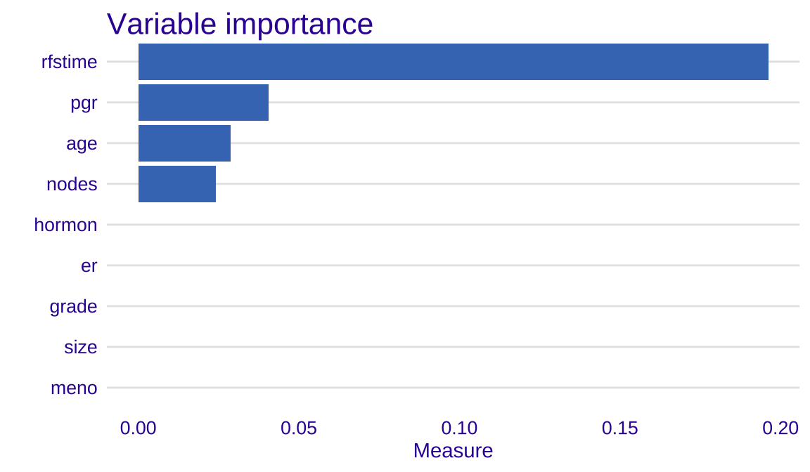
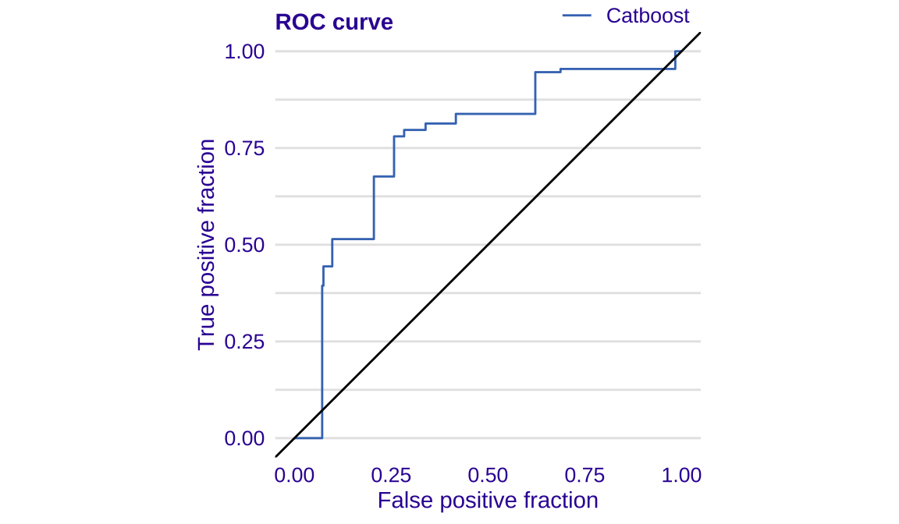

第 6 章 pca and xgboot
Code
Code
6.1 数据
## pid age meno size grade nodes pgr er hormon rfstime
## 1 132 49 0 18 2 2 0 0 0 1838
## 2 1575 55 1 20 3 16 0 0 0 403
## 3 1140 56 1 40 3 3 0 0 0 1603
## 4 769 45 0 25 3 1 0 4 0 177
## 5 130 65 1 30 2 5 0 36 1 1855
## 6 1642 48 0 52 2 11 0 0 0 842
## status
## 1 0
## 2 1
## 3 0
## 4 0
## 5 0
## 6 1
- age：患者年龄
- meno：更年期状态（0表示未更年期，1表示已更年期）
- size：肿瘤大小
- grade：肿瘤分级
- nodes：受累淋巴结数量
- pgr：孕激素受体表达水平
- er：雌激素受体表达水平
- hormon：激素治疗（0表示否，1表示是）
- rfstime：复发或死亡时间（以天为单位）
- status：事件状态（0表示被截尾，1表示事件发生）
6.2 主成分分析
Code
## Standard deviations (1, .., p=6):
## [1] 1.2962 1.1716 0.9650 0.9276 0.7936 0.7254
##
## Rotation (n x k) = (6 x 6):
## PC1 PC2 PC3 PC4 PC5
## age 0.3413 -0.3741 0.69110 -0.2693 0.17943
## size -0.3584 -0.4420 -0.35063 -0.4832 0.56009
## nodes -0.3745 -0.5435 0.04155 -0.1138 -0.74136
## pgr 0.4553 -0.2944 -0.60576 0.1897 -0.08063
## er 0.5266 -0.4167 -0.01334 0.1425 0.02135
## rfstime 0.3609 0.3302 -0.17492 -0.7904 -0.31231
## PC6
## age -0.401554
## size 0.078115
## nodes 0.004621
## pgr -0.544638
## er 0.726728
## rfstime 0.088696## Importance of components:
## PC1 PC2 PC3 PC4 PC5
## Standard deviation 1.30 1.172 0.965 0.928 0.794
## Proportion of Variance 0.28 0.229 0.155 0.143 0.105
## Cumulative Proportion 0.28 0.509 0.664 0.807 0.912
## PC6
## Standard deviation 0.7254
## Proportion of Variance 0.0877
## Cumulative Proportion 1.0000
主成分分析通常用于连续变量而不是分类变量。主成分分析是一种多变量统计技术，旨在减少数据维度并捕捉数据中的模式。它通过线性变换将原始变量转换为一组新的、不相关的变量，称为主成分。这些主成分是原始变量的线性组合，能够最大程度地保留原始数据的方差。
6.3 计算反差贡献
Code
# 提取每个主成分的方差贡献率
variance_proportion <- pca_result$sdev^2 / sum(pca_result$sdev^2)
# 计算累积方差贡献率
cumulative_variance_proportion <- cumsum(variance_proportion)
# 绘制保留方差图
plot(cumulative_variance_proportion,
xlab = "Number of Principal Components",
ylab = "Cumulative Variance Proportion",
ylim = c(0, 1),
type = 'b'
)
Code
Code
# 划分训练集和测试集
set.seed(123)
data <- gbsg[,c(-1)]
# 划分训练集和测试集
set.seed(123)
train_indices <- sample(x = 1:nrow(data), size = 0.7 * nrow(data), replace = FALSE)
test_indices <- sample(setdiff(1:nrow(data), train_indices), size = 0.3 * nrow(data), replace = FALSE)
train_data <- data[train_indices, ]
test_data <- data[test_indices, ]Code
# 划分训练集和测试集
set.seed(123)
train_indices <- sample(x = 1:nrow(data), size = 0.8 * nrow(data), replace = FALSE)
test_indices <- sample(setdiff(1:nrow(data), train_indices), size = 0.2 * nrow(data), replace = FALSE)
train_data <- data[train_indices, ]
test_data <- data[test_indices, ]
train_gbsg <- gbsg[train_indices, ]
test_gbsg <- gbsg[test_indices, ]
library(randomForest)
library(pROC)
set.seed(666)
# 主成分分析后模型
rf <- randomForest(status~., data=train_data)
# 获取模型预测的概率
pred_prob <- predict(rf, newdata = test_data, type = "class")
# 计算真阳性率和假阳性率
roc1 <- pROC::roc(test_data$status, pred_prob)
# 原始数据模型
# 特征选择后的模型拟合
rf_handle <- randomForest(status~., data=train_gbsg)
pred_prob_handle <- predict(rf_handle, newdata = test_gbsg, type = "class")
# 计算真阳性率和假阳性率
roc2 <- pROC::roc(test_gbsg$status, pred_prob_handle)
plot(roc1,col="#2E9FDF", legacy.axes = TRUE)
plot.roc(roc2,add=TRUE,col="red")
abline(h = seq(0, 1, by = 0.1), col = "gray", lty = "dotted")
legend(0.40, 0.17, # 图例位置x，y
bty = "n", # 图例样式
legend=c("Handle AUC 0.684","Unhandle AUC 0.854"), # 添加分组
col=c("#2E9FDF","red"), # 颜色跟前面一致
lwd=2,
border="black") # 线条粗
6.3.1 总结
在乳腺癌研究中，主成分分析（PCA）和随机森林都扮演着重要的角色。PCA可以用于降维，帮助去除数据中的冗余信息，凸显出最重要的特征，从而有助于更好地理解乳腺癌数据集的内在结构。通过这种降维的方式，可以更好地可视化数据、识别潜在的模式，并为后续建模提供更清晰的特征空间。
另一方面，随机森林是一种强大的机器学习算法，它在处理复杂的、高维度的数据集时表现优异。在乳腺癌研究中，随机森林可以用于特征选择和分类任务，能够有效地处理大量特征并且对噪声具有一定的鲁棒性，因此能够提供对乳腺癌数据进行有效分类和预测的能力。
数据科学在医疗领域的应用前景广阔。随着医疗技术的不断进步，数据的积累和共享成为可能，数据科学将在医疗领域发挥越来越重要的作用。
个性化医疗：利用大数据和机器学习技术，可以实现对患者病情、治疗反应等个性化特征的分析，从而实现个性化的医疗方案，提高治疗效果和患者生活质量。 疾病预测和预防：通过对大规模医疗数据的分析，可以发现潜在的疾病发生规律和风险因素，从而提前预测和预防疾病的发生，有助于公共卫生和健康管理工作。 医疗资源优化：通过数据科学的方法，可以对医疗资源的分配和利用进行优化，提高医疗服务的效率和公平性。 总的来说，数据科学在医疗领域的发展将为医疗健康产业带来革命性的变化，为人类健康事业作出重要贡献。
##逻辑回归
Code
绘制列线图

Code

从图中可以看出，age 49时对应的分数是11分，然后meno为0对应的分值为0，nodes为2时对应的分数为3分，总分值为14分，总分值对应的预测值是0.3-0.4之间，小于0.5，所以其预测值应该是0，和实际结果一致。除了这些我们还可以看到哪些信息呢？
特征的取值范围：比如age的取值范围是20-80，meno取值范围是0-1（分类变量），nodes取值范围是0-55. 特征的权重(特征重要性)：线越长代表权重越大，从图中可以看出：nodes > age > meno; 特征的影响趋势(正向、负向)：age越大，发生事件的概率越低，所以是负向趋势；meno和nodes都是随着值越大发生事件的概率越大，所以是正向趋势； 得分：可以通过point得出单个病人某个指标对应的分值，然后通过分值累加即可获得total point； 预测概率：我们可以通过计算得出的total point比对出事件发生的概率。
Code
ddist <- datadist(gbsg[,-1]);
options(datadist='ddist')
model <- lrm(status ~ ., data = gbsg[,-1])
nomogram <- nomogram(model, fun = function(x)1/(1+exp(-x)),funlabel="Risk of Event",conf.int=F,lp=F,fun.at=c(.001,.01,.05,seq(.1,.9,by=.1),.95,.99,.99)) # 逻辑回归计算公式
# 绘制列线图
plot(nomogram)
rect(0.191,0.095,0.65,0.11,col = "green") # 添加彩色条带
rect(0.65,0.095,0.705,0.11,col = "yellow") # 添加彩色条带
rect(0.705,0.095,1.003,0.11,col = "red") # 添加彩色条带
text(0.4,0.125,"Low")
text(0.68,0.125,"Medium")
text(0.85,0.125,"High")在本文中，我们介绍了列线图的基本概念、绘制方法和应用场景。列线图是一种常用的数据可视化工具，它可以帮助我们探索变量之间的关系，解释模型的预测效果，并支持数据驱动的决策。
我们提供了一些实用的技巧和建议，如如何解释列线图的结果、如何定制样式、如何探索非线性关系和如何使用交互式可视化工具等。这些技巧可以帮助读者更好地理解和利用列线图。
未来，我们预计列线图将在数据分析中发挥更重要的作用。随着数据量的不断增加和机器学习的广泛应用，列线图将成为处理大规模数据和评估复杂模型的有力工具。我们鼓励读者继续学习和实践列线图的应用，以应对数据分析领域的挑战。
6.4 XGboot
XGBoost是一个基于梯度提升决策树的机器学习框架，以其高效、可扩展和灵活的特点而著称。其核心算法基于梯度提升决策树，通过迭代地构建一系列弱学习器来逼近一个强大的学习器，从而实现对数据的复杂非线性关系的建模。
「自适应学习率调整功能」，能够自动调整每个决策树的学习率，以提高模型的训练速度和性能。 「支持处理分类特征」，不需要进行独热编码或标签编码，能够直接处理原始的分类数据，这使得模型更加精确且能够保留分类特征的信息。 「优秀的泛化能力」，在处理较少训练样本和高维度数据时能够表现出色。
XGBoost与可解释性。传统的决策树可能会因为过拟合而产生过于复杂的结构，使得解释起来非常困难。而XGBoost与可解释性通过使用基于树的梯度提升方法，能够自动地优化树的深度和叶节点的数量，从而生成易于解释的模型。
「特征重要性评估」：能够计算每个特征对于模型预测的贡献程度，进而帮助我们了解哪些特征对于模型的决策起到了重要作用。这使得我们可以识别出关键特征，进行特征工程或优化模型。 「特征交互可视化」：提供了直观的特征交互可视化功能，能够帮助我们理解不同特征之间的相互作用和影响，例如通过绘制特征之间的依赖关系图或局部影响图。 「模型解释性工具」：提供了一些工具来帮助我们更好地解释模型的决策过程，如决策路径、叶子节点的统计信息等。这些工具可以揭示模型的内部逻辑和规则，从而增强模型的可解释性。 「提供了一系列可视化工具」，如特征重要性评估和模型解释树，帮助用户更好地理解模型决策过程。
Code
## [1] train-logloss:0.547861
## [2] train-logloss:0.521312Code
## Preparation of a new explainer is initiated
## -> model label : Catboost
## -> data : 548 rows 9 cols
## -> target variable : 548 values
## -> predict function : yhat.xgb.Booster will be used ( default )
## -> predicted values : No value for predict function target column. ( default )
## -> model_info : package xgboost , ver. 1.7.6.1 , task classification ( default )
## -> predicted values : numerical, min = 0.1217 , mean = 0.4412 , max = 0.8024
## -> residual function : difference between y and yhat ( default )
## -> residuals : numerical, min = -0.8024 , mean = -0.001398 , max = 0.8781
## A new explainer has been created!Code

个体SHAP图展示每个特征对个体预测的贡献度，从图中我们可以看出，rfstime和grade 对预测的贡献度较大。
Code

CP图显示特征对目标值的影响情况，图中圆点表示样本2 的每个特征的值。
部分依赖图（PDP

变量重要性
Code

ROC
